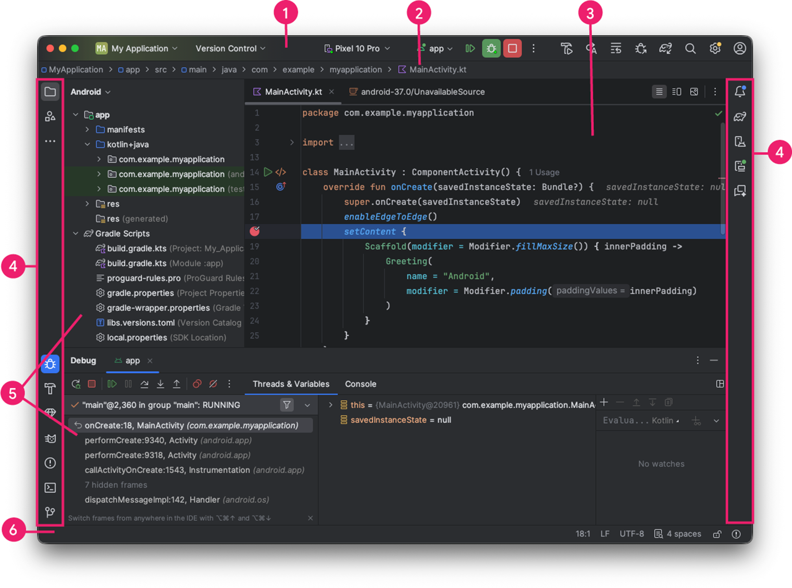

Lire et écrire
Ouvrir un fichier et modifier son contenu dans un éditeur.
Découvrir son outil de travail
Les fichiers du projet sont sur ton ordinateur. Découvre les outils qui t’aideront à les lire, à faire évoluer l’application et à comprendre ce qui se passe.
Cette page présente l’atelier. L’installation et l’ouverture du projet seront accompagnées dans une prochaine page.
01 / Le rôle de l’outil
Tu as récupéré le projet sur ton ordinateur. Tu peux voir ses dossiers et ses fichiers. Pour travailler dessus, tu vas utiliser un IDE.
IDE signifie Integrated Development Environment, soit environnement de développement intégré. « Intégré » veut simplement dire que plusieurs outils sont réunis au même endroit.
Ouvrir un fichier et modifier son contenu dans un éditeur.
Retrouver les fichiers du projet et rechercher un élément.
Préparer l’application, puis l’exécuter sur un appareil.
Lire les messages et chercher pourquoi quelque chose ne marche pas.
02 / Notre atelier
Pour ce parcours Android, notre IDE sera Android Studio. Il connaît les outils nécessaires pour préparer et lancer une application Android. D’autres IDE existent : le principe reste de réunir des outils autour du projet.
Ne cherche pas à comprendre tous les boutons dès maintenant. Commence par repérer les fichiers, l’éditeur et les panneaux qui montrent les messages.

03 / Se repérer
Sélectionne une zone pour lire son rôle. Le dessin ci-dessous est volontairement simplifié : ce n’est pas une vraie session Android Studio.
Leurs rôles sont aussi décrits en texte ci-dessous.
04 / Du fichier à l’application
Changer le contenu d’un fichier dans l’éditeur et l’enregistrer.
Les outils vérifient et transforment le code, puis préparent l’application.
Mettre l’application sur un téléphone ou un émulateur et la démarrer.
Regarder l’écran et les messages pour vérifier le résultat attendu.
Si la préparation échoue, lis le premier message utile avant de relancer. Si l’application démarre mais fait autre chose que prévu, observe ce qui se passe : c’est une autre question.
Git répond à une autre question : « Quelle étape veux-tu conserver dans l’historique ? » Le commit et le push restent des actions distinctes de cette boucle.
05 / À toi de jouer
Pas besoin de connaître les raccourcis ou tous les boutons. Vérifie que tu sais quel outil répond à quel besoin.